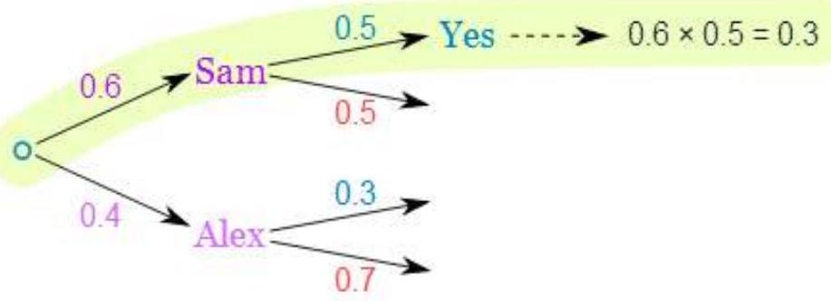

CHAPTER 5: PROBABILITY (Continued)
Probability Tree Diagrams
Calculating probabilities can be hard, sometimes we add them, sometimes we multiply them, and often it is hard to figure out what to do ... tree diagrams to the rescue!
Here is a tree diagram for the toss of a coin:
- The probability of each branch is written on the branch
- The outcome is written at the end of the branch
We can extend the tree diagram to two tosses of a coin:

How do we calculate the overall probabilities?
- We multiply probabilities along the branches
- We add probabilities down columns
Now we can see such things as:
- The probability of "Head, Head" is $0.5 \times 0.5=\mathbf{0 . 2 5}$
- All probabilities add to $\mathbf{1 . 0}$ (which is always a good check)
- The probability of getting at least one Head from two tosses is $0.25+0.25+0.25=\mathbf{0 . 7 5}$
- ... and more
That was a simple example using independent events (each toss of a coin is independent of the previous toss), but tree diagrams are really wonderful for figuring out dependent events (where an event depends on what happens in the previous event) like this example:
Example: Soccer Game
You are off to soccer, and love being the Goalkeeper, but that depends who is the Coach today:
- with Coach Sam the probability of being Goalkeeper is $\mathbf{0 . 5}$
- with Coach Alex the probability of being Goalkeeper is $\mathbf{0 . 3}$
Sam is Coach more often ... about 6 out of every 10 games (a probability of $\mathbf{0 . 6}$ ).
So, what is the probability you will be a Goalkeeper today?
Let's build the tree diagram. First we show the two possible coaches: Sam or Alex:
The probability of getting Sam is 0.6 , so the probability of Alex must be 0.4 (together the probability is 1)
Now, if you get Sam, there is 0.5 probability of being Goalie (and 0.5 of not being Goalie):
If you get Alex, there is 0.3 probability of being Goalie (and 0.7 not):
The tree diagram is complete, now let's calculate the overall probabilities. This is done by multiplying each probability along the "branches" of the tree.
Here is how to do it for the "Sam, Yes" branch:
(When we take the 0.6 chance of Sam being coach and include the 0.5 chance that Sam will let you be Goalkeeper we end up with an 0.3 chance.)
But we are not done yet! We haven't included Alex as Coach:
An 0.4 chance of Alex as Coach, followed by an 0.3 chance gives 0.12 .
Now we add the column:
$0.3+0.12=\mathbf{0 . 4 2}$ probability of being a Goalkeeper today
(That is a $42 \%$ chance)
Check
One final step: complete the calculations and make sure they add to 1 :
Yes, it all adds up.
Conclusion
So there you go, when in doubt draw a tree diagram, multiply along the branches and add the columns. Make sure all probabilities add to 1 and you are good to go.
Set Theory in Probability
A sample space is defined as a universal set of all possible outcomes from a given experiment.
Given two events $\mathbf{A}$ and $\mathbf{B}$ and given that these events are part of a sample space $\mathbf{S}$. This sample space is represented as a set as in the diagram below.
The entire sample space of $\mathbf{S}$ is given by:
Remember the following from set theory:
The different regions of the set $\mathbf{S}$ can be explained as using the rules of probability.
Rules of Probability
When dealing with more than one event, there are certain rules that we must follow when studying probability of these events. These rules depend greatly on whether the events we are looking at are Independent or dependent on each other.
First acknowledge that
Multiplication Rule ($A \cap B$)
This region is referred to as 'A intersection B' and in probability; this region refers to the event that both $\mathbf{A}$ and $\mathbf{B}$ happen. When we use the word and we are referring to multiplication, thus $\mathbf{A}$ and $\mathbf{B}$ can be thought of as $\mathbf{A \times B}$ or (using dot notation which is more popular in probability) A•B
If $\mathbf{A}$ and $\mathbf{B}$ are dependent events, the probability of this event happening can be calculated as shown below:
If $\mathbf{A}$ and $\mathbf{B}$ are independent events, the probability of this event happening can be calculated as shown below:
Conditional probability for two independent events can be redefined using the relationship above to become:
The above is consistent with the definition of independent events, the occurrence of event $\mathbf{A}$ in no way influences the occurrence of event $\mathbf{B}$, and so the probability that event $\mathbf{B}$ occurs given that event $\mathbf{A}$ has occurred is the same as the probability of event $\mathbf{B}$.
Additive Rule ($A \cup B$)
In probability we refer to the addition operator (+) as or. Thus when we want to we want to define some event such that the event can be A or B , to find the probability of that event:
Thus it follows that:
But remember from set theory that and from the way we defined our sample space above:
and that:
So we can now redefine out event as
The above is sometimes referred to as the subtraction rule.
Mutual Exclusivity
Certain special pairs of events have a unique relationship referred to as mutual exclusivity. Two events are said to be mutually exclusive if they can't occur at the same time. For a given sample space, its either one or the other but not both. As a consequence, mutually exclusive events have their probability defined as follows:
An example of mutually exclusive events are the outcomes of a fair coin flip. When you flip a fair coin, you either get a head or a tail but not both, we can prove that these events are mutually exclusive by adding their probabilities:
For any given pair of events, if the sum of their probabilities is equal to one, then those two events are mutually exclusive.
Rules of Probability for Mutually Exclusive Events
- Multiplication Rule: From the definition of mutually exclusive events, we should quickly conclude the following:
- Addition Rule: As we defined above, the addition rule applies to mutually exclusive events as follows:
- Subtraction Rule: From the addition rule above, we can conclude that the subtraction rule for mutually exclusive events takes the form;
Conditional Probability for Mutually Exclusive Events
We have defined conditional probability with the following equation:
We can redefine the above using the multiplication rule
hence
Below is a venn diagram of a set containing two mutually exclusive events $\mathbf{A}$ and $\mathbf{B}$.
Probability Distribution
The Poisson random variable satisfies the following conditions:
- The number of successes in two disjoint time intervals is independent.
- The probability of a success during a small time interval is proportional to the entire length of the time interval.
Apart from disjoint time intervals, the Poisson random variable also applies to disjoint regions of space.
Applications
- the number of deaths by horse kicking in the Prussian army (first application)
- birth defects and genetic mutations
- rare diseases (like Leukemia, but not AIDS because it is infectious and so not independent) - especially in legal cases
- car accidents
- traffic flow and ideal gap distance
- number of typing errors on a page
Downloaded by Patrick Ngobiro (pngobiro@gmail.com)
- hairs found in McDonald's hamburgers
- spread of an endangered animal in Africa
- failure of a machine in one month
The probability distribution of a Poisson random variable $X$ representing the number of successes occurring in a given time interval or a specified region of space is given by the formula:
where
$x=0,1,2,3 \ldots$
$e=2.71828$ (but use your calculator's $e$ button)
$\mu=$ mean number of successes in the given time interval or region of space
The normal (or Gaussian) distribution is a very commonly occurring continuous probability distribution-a function that tells the probability of a number in some context falling between any two real numbers. a theoretical frequency distribution represented by a normal curve.
Figure 4.1: A Normal Distribution
The normal distribution is
The parameter $\mu$ in this formula is the mean or expectation of the distribution (and also its median and mode). The parameter $\sigma$ is its standard deviation; its variance is therefore $\sigma^{2}$. A random variable with a Gaussian distribution is said to be normally distributed and is called a normal deviate.
If $\mu=0$ and $\sigma=1$, the distribution is called the standard normal distribution or the unit normal distribution, and a random variable with that distribution is a standard normal deviate.